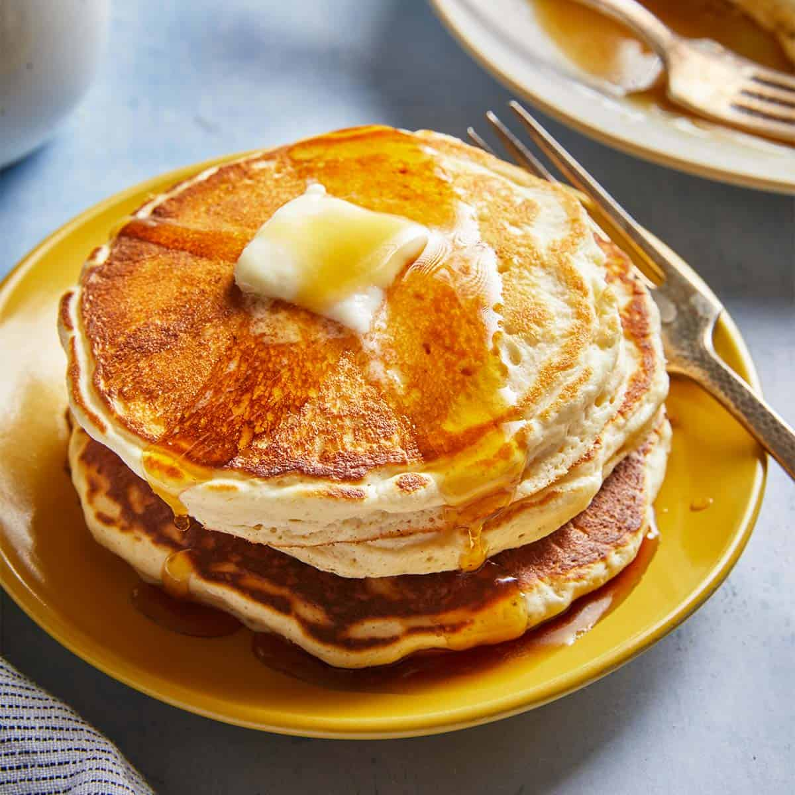

Old-Fashioned Pancakes

Description
This pancake recipe is perfect for every breakfast occasion! It comes straight from Grandma's recipe book and is sure to be a family favorite. You can top these pancakes off with any topping of your choice: syrup, whipped cream, bananas, you name it! We hope you enjoy this recipe of our delicious, homemade panckaes!
Ingredients
- 1 1/2 cups all-purpose flour
- 3 1/2 tablespoons baking powder
- 1 tablespoon white sugar
- 1/4 tablespoon salt
- 1 1/4 cup milk
- 3 tablespoons melted butter
- 1 Egg
Steps
- Sift the dry ingredients together
- Make a well, then add the wet ingredients. Stir to combine
- Cook for two to three minutes on a lightly oiled griddle over medium-high heat
- When edges are dry and and bubbles have formed, Flip!
- Continue cooking until brown on both sides
- Remove from heat
- Top with syrup and butter
- Enjoy!